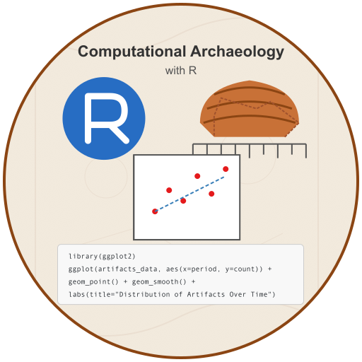

חקר חישובי של ארכיאולוגיה ומקורות היסטוריים תשפ״ה
20/04/2025
tidyverse לביצוע טרנספורמציות יעילותdplyr, tidyr, ggplot2, stringrאופרטור הצינור מאפשר לנו לקשר פעולות ברצף:
מבנה הקובץ שלנו: - 2214 שורות - 22 עמודות (קוד זיהוי + 21 עמודות מספריות) - שמות עמודות בעברית ומספרים
נטפל בבעיות אלו בהדרגה:
# טעינת חבילות
library(tidyverse)
library(janitor) # חבילה מעולה לניקוי נתונים
# טעינת הנתונים
archaeological_data <- read_csv("https://raw.githubusercontent.com/shaigordin/comparch25/refs/heads/main/slide-decks/data/enc.csv", locale = locale(encoding = "UTF-8"))
# הצצה בנתונים
glimpse(archaeological_data)אחת הבעיות הנפוצות בנתונים מבולגנים היא ששמות השדות האמיתיים אינם בשורה הראשונה:
# קריאה ראשונית בלי הנחות לגבי כותרות
raw_peek <- read_csv("https://raw.githubusercontent.com/shaigordin/comparch25/refs/heads/main/slide-decks/data/enc.csv", col_names = FALSE, n_max = 5)
print(raw_peek)
# ניתן לראות ששמות השדות האמיתיים מופיעים בשורה השנייה!
# נקרא שוב עם הגדרות מתאימות
archaeological_data <- read_csv("https://raw.githubusercontent.com/shaigordin/comparch25/refs/heads/main/slide-decks/data/enc.csv",
skip = 1, # דילוג על שורה ראשונה
col_names = TRUE, # השורה הראשונה שנקרא תהיה כותרות
locale = locale(encoding = "UTF-8")) # קידוד עברית
# נבדוק את שמות העמודות החדשים
names(archaeological_data)
# הצגת המבנה החדש
glimpse(archaeological_data)כעת, כשיש לנו את שמות השדות האמיתיים, נוכל לפרש אותם בהקשר ארכיאולוגי:
# יצירת טבלת מילון מונחים
field_dictionary <- tribble(
~original_name, ~clean_name, ~meaning, ~category,
"מס'", "site_id", "מספר ייחודי לאתר הארכיאולוגי", "מידע מנהלי",
"שם אתר", "site_name", "שם האתר כפי שמופיע באנציקלופדיה", "מידע מנהלי",
"ערך משנה", "sub_entry", "למקרים שבהם יש ערך משנה בתוך ערך גדול יותר באנציקלופדיה", "מידע מנהלי",
"נ\"צ X", "coordinate_x", "קואורדינטות האתר ברשת ישראל", "מידע גיאוגרפי",
"נ\"צ Y", "coordinate_y", "קואורדינטות האתר ברשת ישראל", "מידע גיאוגרפי",
"אזור", "region", "האזור הגיאוגרפי הכללי בו נמצא האתר", "מידע גיאוגרפי",
"תת אזור", "sub_region", "חלוקה מפורטת יותר של האזור הגיאוגרפי", "מידע גיאוגרפי",
"חופר", "excavator", "שמות הארכיאולוגים שביצעו את החפירה", "מידע מנהלי",
"מחבר הערך", "entry_author", "שם החוקר האחראי על הערך באנציקלופדיה", "מידע ביבליוגרפי",
"תקופה כללי", "general_period", "התקופה הארכיאולוגית המיוצגת באתר", "מידע כרונולוגי",
"תק' מעבר", "transition_period", "אתרים או שכבות שהוגדרו כתקופת מעבר", "מידע כרונולוגי",
"תק' מיוצגת", "represented_period", "תת-תקופה ארכיאולוגית אם קיימת", "מידע כרונולוגי",
"תארוך ממצא", "find_dating", "מידע מפורט יותר על תאריך הממצא", "מידע כרונולוגי",
"סוג ממצא", "find_type", "סוג הממצא שהתגלה (מתקן/צור/קבר/קרמיקה/בנייה)", "מידע ארכיאולוגי",
"סוג אתר", "site_type", "סיווג האתר (תל/ח׳ירבה/מערה/מחצבה וכו׳)", "מידע ארכיאולוגי",
"אופי אתר", "site_nature", "אופי היישוב (כפרי/עירוני/קבר/שרידים חקלאיים)", "מידע יישובי",
"גודל אתר", "site_size", "גודל האתר הארכיאולוגי המשוער", "מידע יישובי",
"גודל חפירה", "excavation_size", "גודל החפירה הארכיאולוגית אם דווח", "מידע מנהלי",
"הערות", "notes", "נתונים נוספים שלא התאימו לשום שדה אחר", "מידע ביבליוגרפי",
"הפניה", "bibliographic_reference", "מקור הדיווח על החפירה באנציקלופדיה", "מידע ביבליוגרפי"
)
# הצגת המילון
view(field_dictionary)נשפר את שמות העמודות לפורמט סטנדרטי ועקבי:
# יצירת מפת שמות עבור העמודות באמצעות המילון שיצרנו
column_name_map <- setNames(
field_dictionary$clean_name,
field_dictionary$original_name
)
# הצג שמות העמודות המקוריים לצורך בדיקה
cat("Original column names:\n")
print(names(archaeological_data))
# השתמש במיפוי לצורך שינוי שמות העמודות
cleaned_data <- archaeological_data %>%
# שנה עמודות לפי מיפוי - רק עבור עמודות קיימות
rename_with(~ column_name_map[.x],
.cols = intersect(names(archaeological_data), names(column_name_map))) %>%
# נקה עמודות שנותרו
janitor::clean_names()
# הצג שמות העמודות החדשים
cat("\nStandardized column names:\n")
print(names(cleaned_data))
view(cleaned_data)כעת שיש לנו שמות משמעותיים, נוכל לקבץ את המשתנים לפי קטגוריות ניתוח:
# זיהוי ויצירת קבוצות משתנים לפי קטגוריות
# משתנים מרחביים - מיקום גיאוגרפי ומרחבי
spatial_vars <- c("coordinate_x", "coordinate_y", "region", "sub_region")
# משתנים כרונולוגיים - מיצוב זמני ומחזוריות
chronological_vars <- c("general_period", "transition_period", "represented_period", "find_dating")
# משתנים טיפולוגיים - סיווג ופרשנות חומרית
typological_vars <- c("find_type", "site_type", "site_nature")
# משתנים כמותיים - ממדים מדידים לניתוח סטטיסטי
quantitative_vars <- c("site_size", "excavation_size")
# משתנים מנהליים - תיעוד וניהול חפירות ומחקר
administrative_vars <- c("site_id", "site_name", "sub_entry", "excavator",
"entry_author", "notes", "bibliographic_reference")
# רשימות משתנים מסוננות על סמך מערך הנתונים בפועל
existing_spatial_vars <- intersect(spatial_vars, names(cleaned_data))
existing_chronological_vars <- intersect(chronological_vars, names(cleaned_data))
existing_typological_vars <- intersect(typological_vars, names(cleaned_data))
existing_quantitative_vars <- intersect(quantitative_vars, names(cleaned_data))
# ניתוח כרונולוגי-טיפולוגי - התפלגות סוגי ממצא על פני תקופות
if(length(existing_chronological_vars) > 0 && length(existing_typological_vars) > 0) {
# Select the most appropriate period variable
period_var <- existing_chronological_vars[1]
type_var <- existing_typological_vars[1]
# טבלת התפלגות כרונולוגית-טיפולוגית
period_type_distribution <- cleaned_data %>%
count(.data[[period_var]], .data[[type_var]]) %>%
spread(.data[[type_var]], n, fill = 0)
# הצג התפלגות
cat("\nCHRONOLOGICAL-TYPOLOGICAL DISTRIBUTION:\n")
print(head(period_type_distribution))
}כיצד ניגש לבחון סוגי משתנים כדי לזהות חוסר עקביות? למשל בנתון שאמור להיות כמותי כמו גודל אתר
# ניתוח גודל אתר לפי תקופה
# בדקו את מבנה הנתונים כדי להבין את חוסר העקביות בסוג הנתונים
site_size_types <- cleaned_data %>%
group_by(general_period) %>%
summarise(
n_rows = n(),
data_type = first(class(site_size)),
example_values = paste(head(site_size, 2), collapse = ", ")
)
print("DATA TYPE ANALYSIS BY PERIOD:")
print(site_size_types)
view(site_size_types)עכשיו נוכל לנתח את המשתנים הקטגוריאליים בצורה משמעותית יותר:
# יצירת מטריצת תפוצה טיפולוגית-כרונולוגית
# שימוש בשמות משתנים סטנדרטיים המבוססים על מיפוי הנתונים הקודם שלנו
find_period_summary <- cleaned_data %>%
# Use standardized field names: represented_period for chronology, find_type for typology
count(represented_period, find_type) %>%
arrange(represented_period, desc(n))
view(find_period_summary)
# סידור כרונולוגי המבוסס על חלוקת תקופות ארכיאולוגיות
# The archaeological chronology must be adapted to match actual periods in dataset
cleaned_data <- cleaned_data %>%
mutate(
# Converting period to factor with archaeologically-informed chronological order
# This sequence reflects standard Near Eastern archaeological periodization
represented_period = factor(represented_period),
# Converting typological classification to factor
# Using standardized field name for find type
find_type = factor(find_type)
)
summary(cleaned_data$represented_period)
summary(cleaned_data$find_type)
# יצירת ניתוח התפלגות כרונולוגי
period_counts <- cleaned_data %>%
count(represented_period) %>%
arrange(represented_period)
# הצגת דפוסי התפלגות כרונולוגיים
print(period_counts)
view(period_counts)הפעולה mutate מאפשרת לנו ליצור או לשנות משתנים:
# יצירת עותק של הנתונים לעבודה
working_data <- archaeological_data %>%
# נבחר עמודות מספריות לדוגמה
select(`קוד זיהוי`, where(is.numeric)) %>%
# ניצור טרנספורמציה פשוטה - המרה מיחידות אחת לאחרת
mutate(
normalized_value = `1` / 10, # לדוגמה: המרה לס"מ
log_value = log10(`1` + 1) # טרנספורמציה לוגריתמית עם הוספת 1 למניעת log(0)
)
# הצגת התוצאות
head(working_data)טרנספורמציות לוגריתמיות ושורש ריבועי שימושיות להתמודדות עם התפלגויות מוטות ימינה:
# טרנספורמציות נפוצות
transformed_data <- archaeological_data %>%
select(`קוד זיהוי`, where(is.numeric)) %>%
mutate(
log10_transform = log10(`1` + 1), # לוגריתם בבסיס 10
natural_log = log(`1` + 1), # לוגריתם טבעי
sqrt_transform = sqrt(`1`), # שורש ריבועי
inverse_transform = 1 / (`1` + 0.001), # טרנספורמציית הופכי
cube_root = sign(`1`) * abs(`1`)^(1/3) # שורש שלישי
)
# הצגת ההשפעה על ההתפלגות
hist_original <- hist(transformed_data$`1`, main = "התפלגות מקורית")
hist_log <- hist(transformed_data$log10_transform, main = "התפלגות אחרי טרנספורמציה לוגריתמית")סטנדרטיזציה מאפשרת להשוות בין משתנים בסקלות שונות:
# חישוב ציוני Z (Z-scores)
standardized_data <- archaeological_data %>%
select(`קוד זיהוי`, where(is.numeric)) %>%
mutate(across(where(is.numeric), ~scale(.x)[,1], .names = "z_{.col}"))
# הצגת התוצאות
head(standardized_data)# ויזואליזציה של נתונים מקוריים מול מתוקננים
library(ggplot2)
# נשתמש בפונקציית pivot_longer מחבילת tidyr
comparison_data <- standardized_data %>%
select(`קוד זיהוי`, `1`, z_`1`) %>%
pivot_longer(cols = c(`1`, z_`1`),
names_to = "variable_type",
values_to = "value")
# נוצר גרף השוואה
ggplot(comparison_data, aes(x = value)) +
geom_density() +
facet_wrap(~ variable_type, scales = "free") +
theme_minimal() +
labs(title = "השוואה בין נתונים מקוריים למתוקננים")טרנספורמציית Box-Cox היא משפחה של טרנספורמציות עוצמה:
\[ T_{BC}(x, \lambda) = \begin{cases} \frac{x^\lambda - 1}{\lambda} & \text{if } \lambda \neq 0 \\ \log(x) & \text{if } \lambda = 0 \end{cases} \]
# שימוש בחבילת car לטרנספורמציית Box-Cox
library(car)
# בחירת מספר ערכי למבדא לבדיקה
lambda_values <- c(-2, -1, -0.5, 0, 0.5, 1, 2)
# יצירת טרנספורמציות Box-Cox (רק למשתנים חיוביים)
positive_values <- archaeological_data %>%
filter(`1` > 0) %>%
pull(`1`)
# חישוב טרנספורמציות Box-Cox שונות
box_cox_transforms <- sapply(lambda_values, function(lambda) {
if (lambda == 0) {
return(log(positive_values))
} else {
return((positive_values^lambda - 1) / lambda)
}
})חישוב יחסים בין ממדים שונים חשוב לניתוח הבדלי צורה:
הממוצע הגיאומטרי משמש לנטרול השפעות גודל:
# חישוב ממוצע גיאומטרי עבור כל שורה (מדגים על מספר עמודות)
size_adjusted_data <- archaeological_data %>%
select(`קוד זיהוי`, `1`:`5`) %>%
rowwise() %>%
mutate(
# חישוב ממוצע גיאומטרי (נוסיף ערך קטן למניעת 0)
geom_mean = exp(mean(log(c_across(`1`:`5`) + 0.001), na.rm = TRUE)),
# חלוקה בממוצע הגיאומטרי
`1_adj` = `1` / geom_mean,
`2_adj` = `2` / geom_mean,
`3_adj` = `3` / geom_mean,
`4_adj` = `4` / geom_mean,
`5_adj` = `5` / geom_mean
) %>%
ungroup()
# הצגת התוצאות
head(size_adjusted_data)בניתוח מכלולים ארכיאולוגיים, נפוץ להמיר ספירות לאחוזים:
# המרת נתונים לאחוזים (נתונים קומפוזיציוניים)
percentage_data <- archaeological_data %>%
select(`קוד זיהוי`, `1`:`5`) %>%
rowwise() %>%
mutate(
row_sum = sum(c_across(`1`:`5`), na.rm = TRUE),
# המרה לאחוזים
`1_pct` = `1` / row_sum * 100,
`2_pct` = `2` / row_sum * 100,
`3_pct` = `3` / row_sum * 100,
`4_pct` = `4` / row_sum * 100,
`5_pct` = `5` / row_sum * 100
) %>%
ungroup()
# הצגת התוצאות
head(percentage_data)בעיות בשימוש באחוזים:
# טרנספורמציות log-ratio
# נייבא את חבילת compositions
library(compositions)
# נטפל בערכי 0 על ידי הוספת ערך קטן
compositional_data <- archaeological_data %>%
select(`קוד זיהוי`, `1`:`5`) %>%
mutate(across(`1`:`5`, ~ifelse(.x == 0, 0.001, .x)))
# חישוב additive log-ratio (alr)
alr_data <- compositional_data %>%
select(-`קוד זיהוי`) %>%
as.matrix() %>%
alr() %>%
as_tibble() %>%
bind_cols(select(compositional_data, `קוד זיהוי`))
# חישוב centered log-ratio (clr)
clr_data <- compositional_data %>%
select(-`קוד זיהוי`) %>%
as.matrix() %>%
clr() %>%
as_tibble() %>%
bind_cols(select(compositional_data, `קוד זיהוי`))
# הצגת התוצאות
head(clr_data)בואו נשווה את ההשפעה של שיטות טרנספורמציה שונות על הנתונים שלנו:
# יצירת מסגרת נתונים להשוואה
comparison_framework <- archaeological_data %>%
select(`קוד זיהוי`, `1`) %>%
mutate(
original = `1`,
log10 = log10(`1` + 1),
sqrt = sqrt(`1`),
cube_root = sign(`1`) * abs(`1`)^(1/3),
z_score = scale(`1`)[,1]
) %>%
pivot_longer(cols = c(original, log10, sqrt, cube_root, z_score),
names_to = "transformation",
values_to = "value")
# יצירת גרף המשווה את ההתפלגויות
ggplot(comparison_framework, aes(x = value)) +
geom_density() +
facet_wrap(~ transformation, scales = "free") +
theme_minimal() +
labs(title = "השוואה בין שיטות טרנספורמציה שונות")טרנספורמציה לוגריתמית - התפלגויות עם זנב ימני ארוך - יחסים אקספוננציאליים - נתונים בסדרי גודל שונים מאוד
שורש ריבועי / שלישי - נתוני ספירה (count data) - התפלגויות מוטות ימינה באופן מתון - משתנים עם שונות הגדלה עם הממוצע
Z-scores - השוואה בין משתנים בסקלות שונות - סטנדרטיזציה למודלים סטטיסטיים - הסרת הבדלי גודל בין משתנים
Log-ratio - נתונים קומפוזיציוניים - בעיות סגירות (closure) - הסרת קורלציות מלאכותיות
tidyverse מספקת כלים יעילים לטרנספורמציות נתוניםשאלות?
שיטות מתודולוגיות ב׳ / אונ׳ אריאל